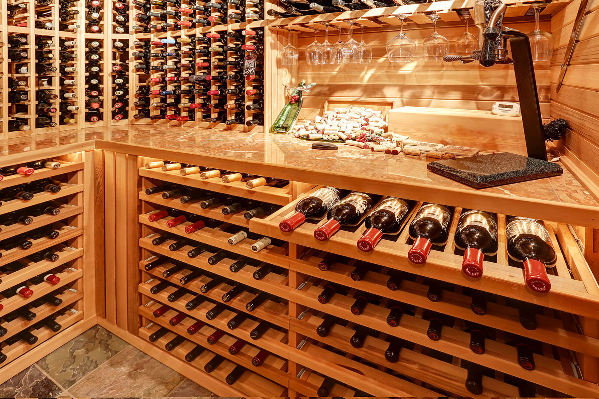

Nossa vinícola familiar é um negócio que tem sido passado de geração em geração na minha família há mais de 100 anos. Estamos localizados na Serra Catarinense, em Campo Belo do Sul e somos conhecidos por produzir alguns dos melhores vinhos da região.
A história da nossa vinícola começa com meu bisavô, que era um apaixonado por vinho e decidiu iniciar a produção em suas terras. Ele plantou as primeiras videiras e começou a produzir vinho de forma artesanal, usando apenas as técnicas tradicionais da época. Desde então, nossa família tem se dedicado a aprimorar o processo de produção e preservar as tradições que foram passadas de geração em geração.
Hoje, a vinícola é gerenciada por mim e meus irmãos. Cada um de nós tem uma função específica na produção, desde a colheita das uvas até o engarrafamento final. Nóstrabalhamos juntos para garantir que cada garrafa de vinho produzida seja da mais alta qualidade possível.
Uma das coisas que mais me orgulho na nossa vinícola é o fato de que nós produzimos vinhos que são verdadeiramente únicos. Cada safra tem suas próprias características distintas, que são resultado da combinação única de uvas, clima e técnicas de produção. Isso significa que, ao experimentar nossos vinhos, você está experimentando algo que não pode ser encontrado em nenhum outro lugar do mundo.
Outra coisa que eu adoro sobre a nossa vinícola é o fato de que somos uma empresa familiar. Nós nos importamos com cada garrafa de vinho que produzimos e estamos sempreprocurando maneiras de melhorar nosso processo de produção. Nós também adoramos receber visitantes em nossa vinícola, para compartilhar nossa paixão pelo vinho e mostrar o que fazemos de melhor.
Para nós, a produção de vinho não é apenas um negócio, é uma tradição que tem sido passada de geração em geração. É uma forma de preservar nossas raízes e de celebrar a nossa cultura. E eu espero que, ao experimentar nossos vinhos, você possa sentir essa mesma paixão e dedicação que nós colocamos em cada garrafa.
Além da nossa paixão pela produção de vinhos de alta qualidade, a nossa vinícola familiar também tem uma missão, visão e valores que guiam o nosso trabalho.